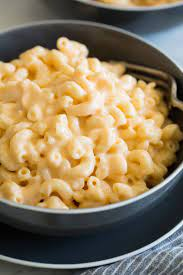

Mac N Cheese

Details:
Mmm Cheese with Macoroni. I absolutly love Mac and Cheese.
This recipe will go great with the fried chicken or by itself
Ingredients:
- 1 lb elbow pasta
- 1/2 C all purpose flour
- 1/2 C Unsalted butter
- 1/2 tsp onion powder
- 2 cups of milk
- 1/2 tsp salt
- 8 oz block sharp cheddar shredded
Directions:
- Cook the macaroni per the back of the package
- Add the milk, flour and rest of the ingredients to the pot and whisk
- Add the cooked and drained pasta to pot with the cheese sauce and stir. Enjoy